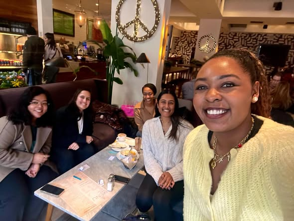
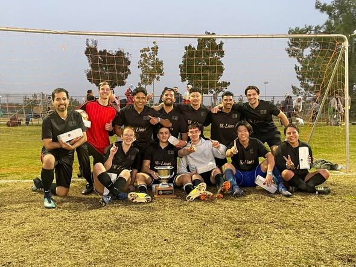

Board Oversight
Independent board sets strategy and reviews financials.

Alaska Progressive Donor Table operates exclusively for charitable purposes under Internal Revenue Code 501(c)(3). EIN: 10113874. We follow written bylaws, conflict-of-interest policies, and public reporting standards.
Independent board sets strategy and reviews financials.
Scopes, eligibility, outcomes, and key metrics are published.

Governance education and training support continuous improvement.